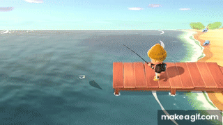
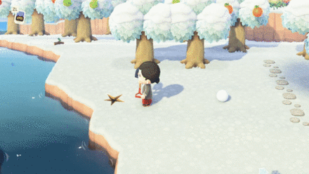
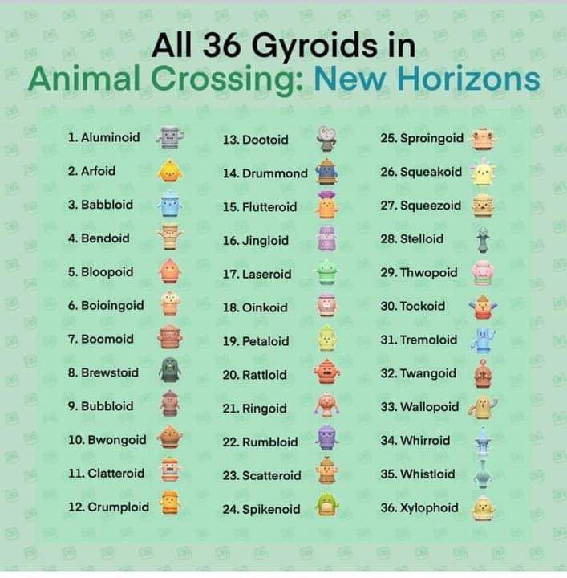

Fishing,Bug Hunting and Fosils
Fishing
Fishing in Animal Crossing is one of the things fans love most. You can donate the fish you catch to the museum to try to complete the fish collection, or you can trade them for Bells.

In the table below, I`ll list some of the fish from this spring season, organized by month.
| March | April | May |
|---|---|---|
| Bitterling | Butterfly Fish | Angelfish |
| Yelow Perch | Clown Fish | Betta |
| Stringfish | Crawfish | Catfish |
| Sturgeon | Killifish | Frog |
| Sea Butterfly | Neon Tetra | Giant Trevally |
| Football fish | Guppy | Mahi-mahi |
| Cherry Salmon | Zebra Turkeyfish | Nibble Fish |
| Char | Seahourse | Rainbowfish |
Bug Hunting
Bug catching in Animal Crossing works the same way as fishing.

In the table below, I`ll list some of the bugs from this spring season, organized by month.
| March | April | May |
|---|---|---|
| Commun Butterfly | Agrias Butterfly | |
| Yellow Butterfly | Great Purple Emperor | |
| Tiger Butterfly | Queen Alexandra's Birdwing | |
| Peacock Butterfly | Banded Dragonfly | |
| Emperor Butterfly | Ladybug | Scorpion |
| Mantis | Atlas Moth | Violin Beetle |
| HoneyBee | Rosalia Batesi Beetle | |
| Orchid Mantis | Drone Beetle | |
Fossils
In addition to fishing and catching bugs, you can also dig up fossils or gyroids. You can donate the fossils,just like the bugs and fish,to the museum. The gyroids, on the other hand, can be used for decoration.

There are lots of different gyroids.
